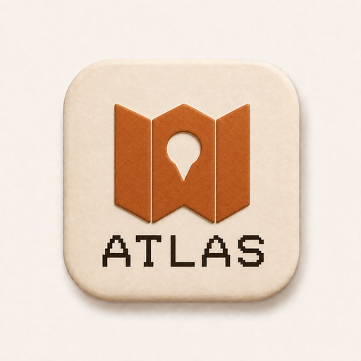

Skip to workspace
Your skills, connected.
Opening the example atlas
…

Skill Atlas
Graph
Library
Usage
Search skills
⌘ K
Design preview
YOUR SKILL MAP
One view of everything you work with.
List
−
Fit
+
Scroll to zoom · drag to explore
Connect your agent
Library
Sort skills
A–Z
Most connected
By source
Search skills
Esc
This local design study needs JavaScript for its graph and interactions. It does not connect to external services.